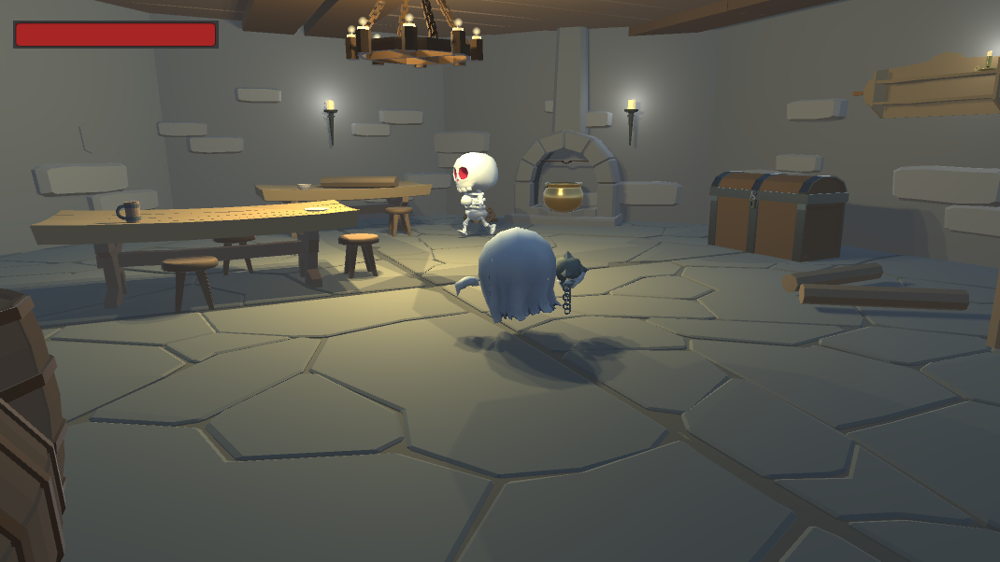
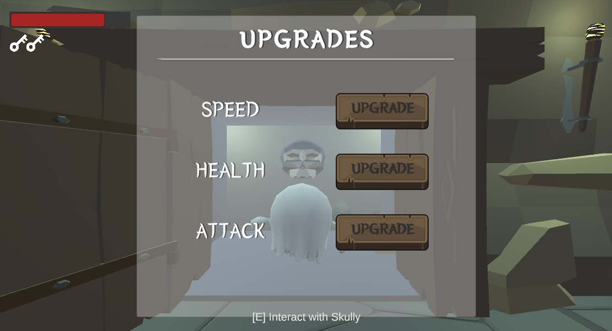

Mila Brooks - Game Developer Portfolio
Game Dev • Artist • Programmer
UNIVERSITY PROJECTS PERSONAL PROJECTS RESUME ABOUT

Grimm Escape
(Oct 2023 - Dec 2023)
- Project Type: University group project
- Software: Unity, Visual Studio
- Language: C#
In Grimm Escape, you play as a ghost escaping a necromancer's tower. Fight enemy skeletons and solve puzzles to advance up the levels of the tower. The game culminates in a final puzzle and boss fight against the necromancer for your freedom.
This game was made in a team of 4 as part of a game programming class. We were given three months to make any game of our choosing.
Read Our Documentation Here!
My Contributions:
- UI: created pause menu, title screen, and puzzle UI
- Puzzles: implemented puzzle gameplay and level progression
- Gameplay: created intro and outro story scenes at the beginning and end of the game
